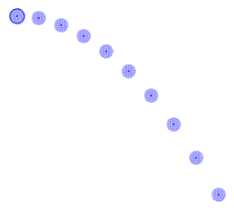
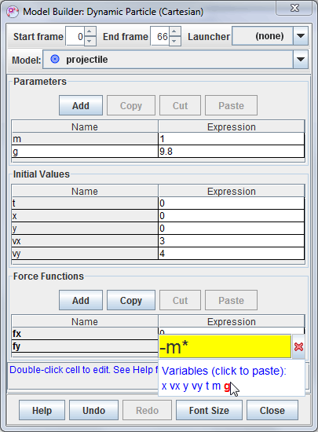
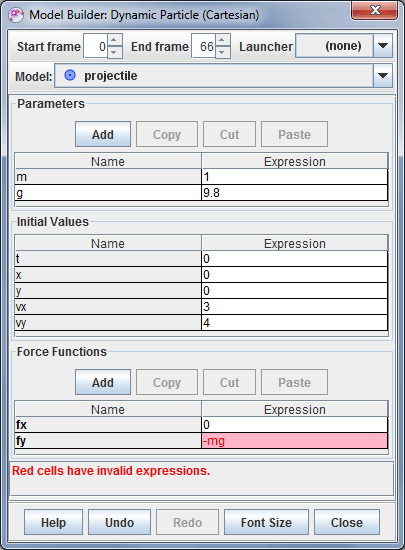

Modeli
z delci

Sled modela z delci je matematični model točkovne mase. Položaji delca v korakih so določeni s parametri modela in ne z miško.
Imamo dva modela delcev: analitični in dinamični. Analitični model definira položaje kot časovne funkcije (Slika 4), dinamični model pa definira funkcije sil in začetne pogoje za numerično reševanje navadnih diferencialnih enačb (ODE) (Slika 1). Dinamične modele lahko definiramo v koordinatah ali kartezičnega ali polarnega koordinatnega sistema.
Modeli imajo začetno in končno sličico, ki definirata sličice video posnetka, v katerih bodo vrisani. To omogoča definicijo več modelov, ki so uporabljeni v različnih časih istega video posnetka.
Model z delci ima nastavljivo maso in tvori podatke o gibanju in vektorje kot za katerokoli drugo mtočkovno maso. Več o tem zasledimo v poglavju Točkovna masa.
Lastnosti modela z delci lahko prikažemo in urejamo z orodjem Graditelj modela (Model Builder). Graditelja izberemo z izbiro Graditelj modela... v modelovem menuju sledi.
| abs(x) | acos(x) | acosh(x) | asin(x) | asinh(x) | atan(x) | atanh(x) | atan2(x,y) | ceil(x) | cos(x) |
| cosh(x) | exp(x) | frac(x) | floor(x) | int(x) | log(x) | max(x,y) | min(x,y) | mod(x,y) | random(x) |
| round(x) | sign(x) | sin(x) | sinh(x) | sqr(x) | sqrt(x) | step(x) | tan(x) | tanh(x) |
Tabela
1 Matematične funkcije, ki jih razpoznava interpreter OSP
Graditelj modela prikazuje funkcije modela skupaj z dodeljenimi parametri inn začetnimi pogoji v tabelah s stolpci Ime in Izraz, kot kaže slika 1. Ime modela vidimo v polju nad tabelami.
Ime ali nek izraz lahko spremenimo tako, da dvokliknemo na ustrezno celico tabele (sivih celic ne moremo spreminjati). Imena morajo biti unikatna in lahko vsebujejo presledke ali matematične simbole. Izrazi morajo biti veljavni matematični izrazi, ki jih lahko pregleduje OSP pregledovalnik.
Nov parameter ali podporno funkcijo tvorimo s klikom na ustrezen gumb Dodaj.
Če urejamo nek izraz, pomodrijo imena vseh možnih spremenljivk , tkomkot to prikazuje slika 2. Neko spremenljivko lahko vključimo v seznam tako, da nanjo premaknemo mišji kurzor. Ko spremenljivka pordeči, kliknemo.
Spremenljivke za izraze parametrov vsebujejo le druge parametre, spremenljivke za funkcijske izraze pa vsebujejo neodvisne spremenljivke (na pr.., x, y, t, itd), parametre in imena podpornih funkcij. V prikazanem primeru je lahko funkcija "fy" odvisna od katerekoli ali vseh spremenljivk x, vx, y, vy, t, m, g. Vnos "-m*g" je zato veljaven izraz.

Slika.
2 Urejanje izraza
Če v celico vnesemo neveljaven izraz, celica pordeči, v statusni vrstici pa se prikaže obvestilo o napaki. Na sliki 3 je izraz "-mg" neveljaven, ker manjka operator množenja (*). Napako povzročajo tudi krožne reference.

Slika.
3 Neveljaven izraz
Graditelj modela vsebuje več pomagal za tvorbo, spreminjanje in hitro primerjavo modelov:
Slika. 4 Uporaba podporne funkcije za poenostavljanje izraza